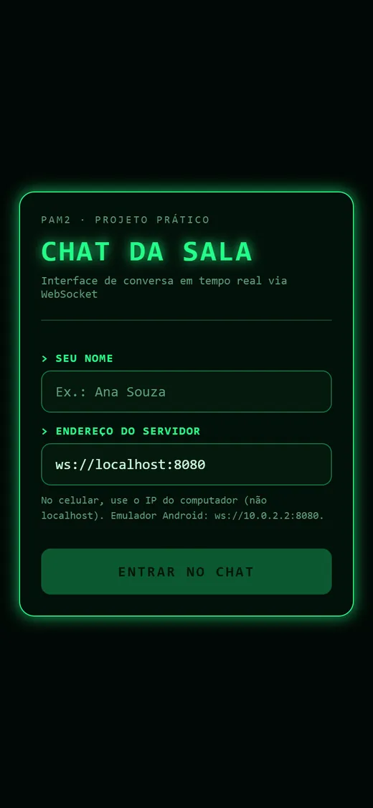
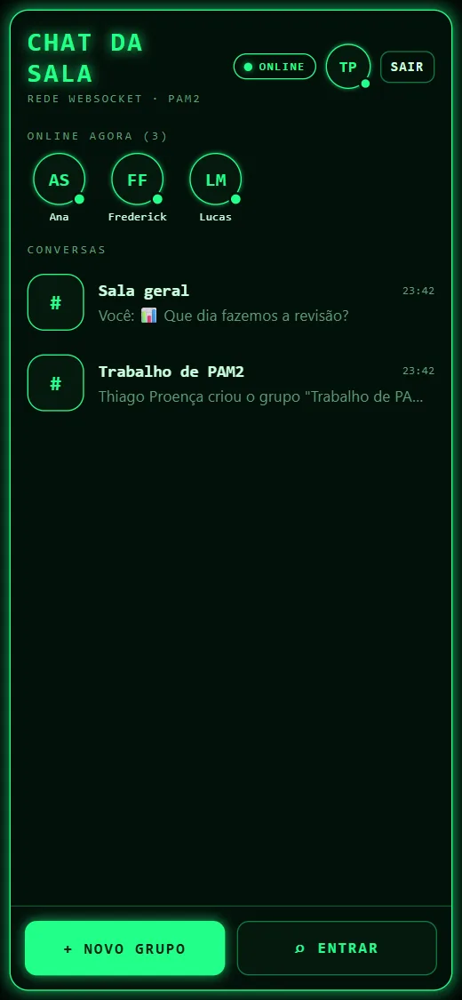
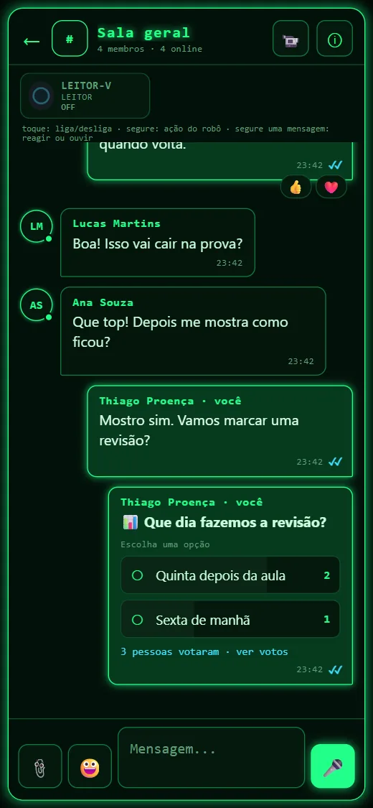
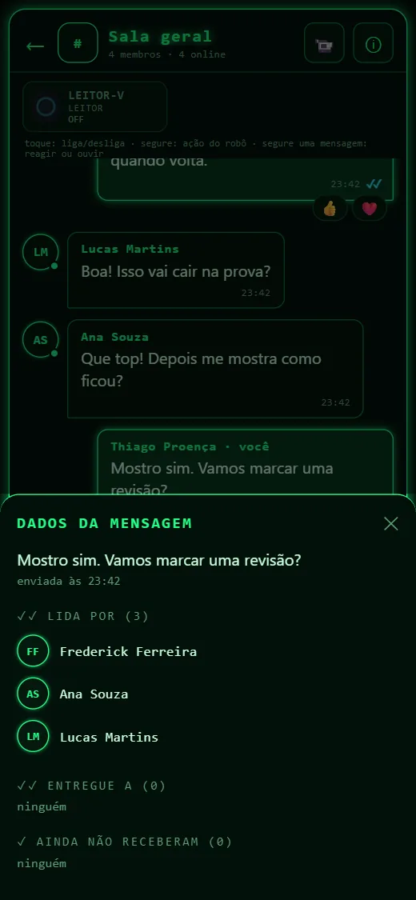
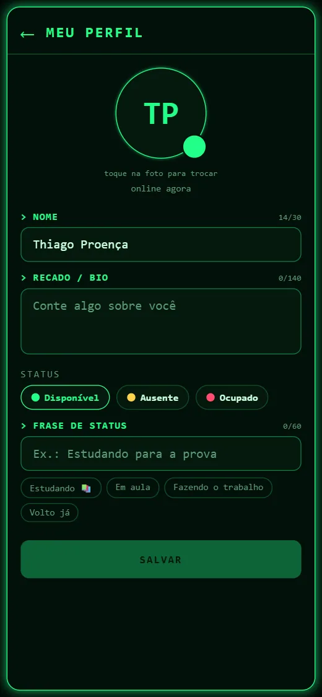

← Projetos da Etec
Programação de Aplicativos Mobile II
Chat da Sala
Chat em tempo real para a turma, com servidor Node.js por WebSocket e aplicativo em React Native (Expo).
- Matéria
- Programação de Aplicativos Mobile II
- Dupla
- Thiago Proença e Frederick Ferreira
- Escola
- Etec Dr. Demétrio Azevedo Jr.
- Tecnologias
- React Native, Expo, WebSocket, Node.js
O que o app faz
- Sala geral e grupos criados pelos alunos, públicos ou privados (entrada por código de convite).
- Mensagens de texto, fotos, áudio, figurinhas, arquivos e enquetes, com reações, edição e "apagar para todos".
- Entrega e leitura: ✓ enviada, ✓✓ entregue e ✓✓ azul lida, com a lista de quem leu.
- Perfil e status (disponível, ausente, ocupado), "online" e "visto por último".
- Reconexão automática com fila de envio: o que foi escrito sem conexão sai sozinho ao reconectar, sem duplicar.
- O servidor guarda tudo em arquivo, então quem entra depois vê o histórico.
Telas





